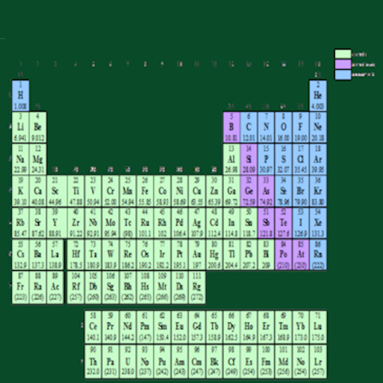

Naming chemical compounds follows a systematic set of rules to ensure that each compound has a unique and universally recognized name. The process differs for ionic, covalent (molecular), and organic compounds. This ensures clarity and consistency when identifying the type and composition of the compound.
For ionic compounds, which consist of metals and non-metals, the name is derived from the cation (positive ion) followed by the anion (negative ion). For example, NaCl is named sodium chloride. If the metal can form ions with different charges (transition metals), a Roman numeral indicates its charge, like iron(III) chloride for FeCl₃. The anion's name usually ends in “-ide,” such as chloride or oxide, unless it's a polyatomic ion like sulfate (SO₄²⁻) or nitrate (NO₃⁻).
For covalent (molecular) compounds, which involve non-metals, prefixes are used to indicate the number of atoms of each element in the compound. For instance, CO₂ is carbon dioxide, where “di-” means two oxygen atoms. The prefixes (mono-, di-, tri-, tetra-, etc.) help specify the exact composition. The second element’s name typically ends in “-ide,” similar to ionic compounds.
In organic chemistry, compounds are named based on the number of carbon atoms in the longest chain, the type of bonds (single, double, triple), and functional groups attached. The International Union of Pure and Applied Chemistry (IUPAC) provides a detailed set of rules for this. For example, methane (CH₄) is the simplest organic compound, while compounds with double bonds use the “-ene” suffix (e.g., ethene for C₂H₄). This systematic approach ensures accurate identification of complex organic molecules.
